LEO-NET ’26ACM SIGCOMM workshop · Denver
Beyond the Cone Model: Quantifying the Impact of Beam-Level Constraints on
LEO Satellite Networks
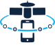
Democratized Direct-to-Device Satellite Communication Networks
A joint initiative between Inria Lyon and UC Berkeley to build open and inclusive direct-to-device satellite networks.
D3-CONNECT is a 2025–2027 Associate Team between Inria Agora (France) and UC Berkeley (USA), rethinking how satellite networks reach ordinary devices.
Our mission is to democratize direct-to-device satellite communications by developing inclusive architectures that let both large and small space actors participate in the emerging D2D ecosystem. We aim to break down barriers to entry and create a more equitable space communication infrastructure.
The work spans analytical modeling, constellation simulation and system architecture, from beam-level physical constraints on a single satellite up to the economics of sharing a constellation between several operators.
Each objective pairs a modeling question with a concrete artifact the community can reuse.
Empower small satellite operators and IoT providers with accessible communication protocols that do not require massive infrastructure investments.
Combine space and terrestrial network designs into hybrid systems that leverage the strengths of both approaches for optimal performance.
Develop tools to evaluate multi-tenant D2D systems, from beam-level hardware constraints to constellation-scale coverage and capacity.
Connect research excellence from Inria and Berkeley to address global connectivity challenges with local relevance.
France
Experts in satellite-terrestrial IoT and delay-tolerant networking, with extensive experience designing communication protocols for challenging environments.
USA
Pioneers in decentralized mobile architectures (CellBricks), bringing cutting-edge research in network systems and distributed computing.
The researchers steering the Associate Team.
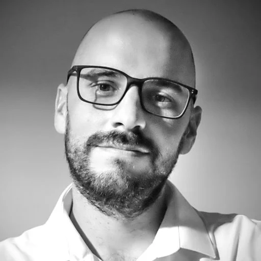
Inria Lyon – Agora
PI, InriaUC Berkeley – NetSys
PI, BerkeleyUC Berkeley – NetSys / ICSI
PI, BerkeleyThe people doing the day-to-day science, several of them funded by the Associate Team.
PhD student, Virginia Tech
Coverage & capacity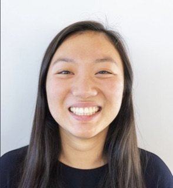
PhD student, UC Berkeley
Beams & access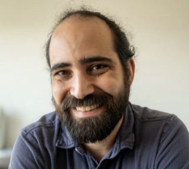
Virginia Tech
CollaboratorFrom shared use cases and first models to an integrated, disseminated set of tools.
Use case definition, architecture design and initial modeling tools. Kickoff workshop at Berkeley and the first joint publications.
Simulation and performance evaluation of the proposed architectures: beam-level modeling, infrastructure sharing economics, and iterative refinement against real deployment data.
System integration and dissemination of results, with preparation for technology transfer and implementation planning.
Peer-reviewed output from the Associate Team, newest first.
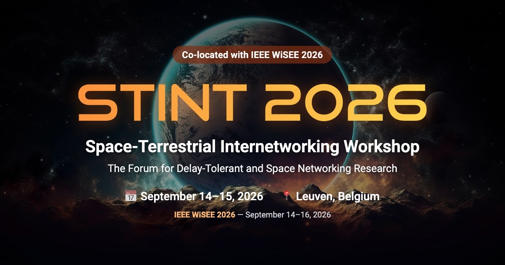
Wesley Woo and Tenzin Ukyab travelled to Leuven for a dedicated D3-CONNECT session at the STINT 2026 Space-Terrestrial Internetworking Workshop, co-located with IEEE WiSEE 2026. Both invited talks were funded by the Associate Team.
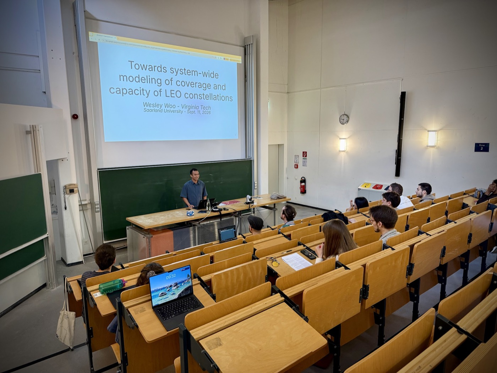
Wesley Woo joined the Space Informatics course taught by J. Fraire and H. Hermanns, with a guest lecture on Towards System-wide Modeling of Coverage and Capacity of LEO Constellations. The visit was funded by the Associate Team.
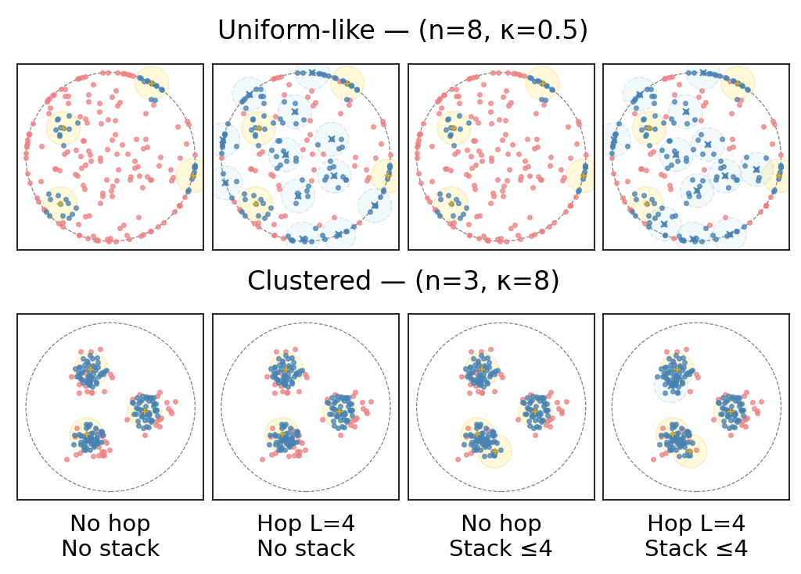
Our paper “Beyond the Cone Model” was accepted and presented at LEO-NET 2026, co-located with ACM SIGCOMM. It shows how the cone abstraction used by most LEO simulators overstates coverage once real beam counts and beam capacity are taken into account.
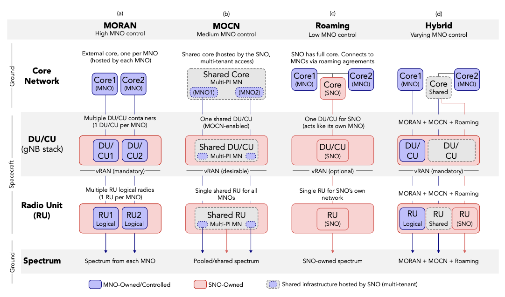
Our framework for infrastructure sharing adapts terrestrial models such as MORAN, MOCN and roaming to LEO and GEO constellations, letting a satellite operator support several mobile network operators at once. The work is now being extended into a full journal article built around a closed-form feasibility law.
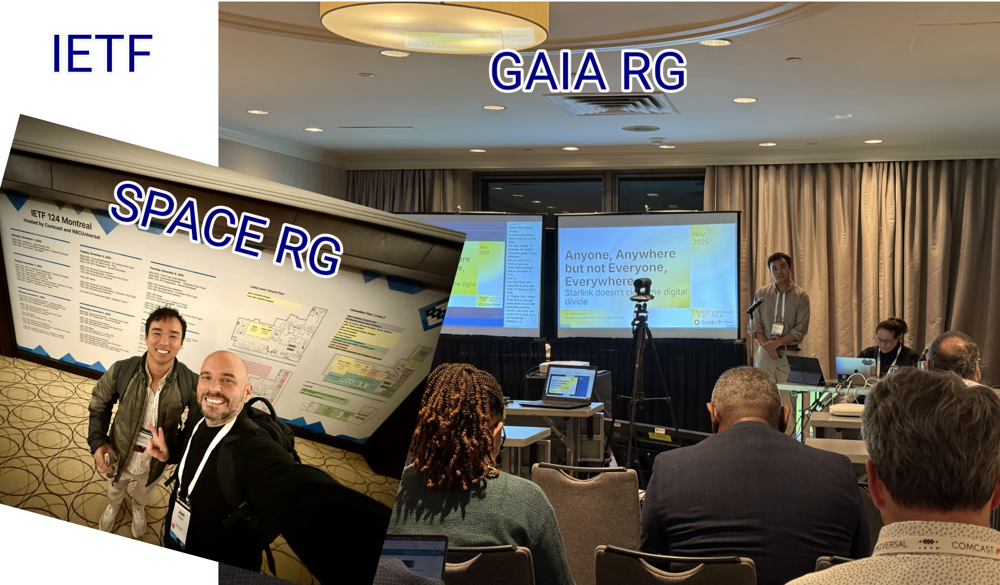
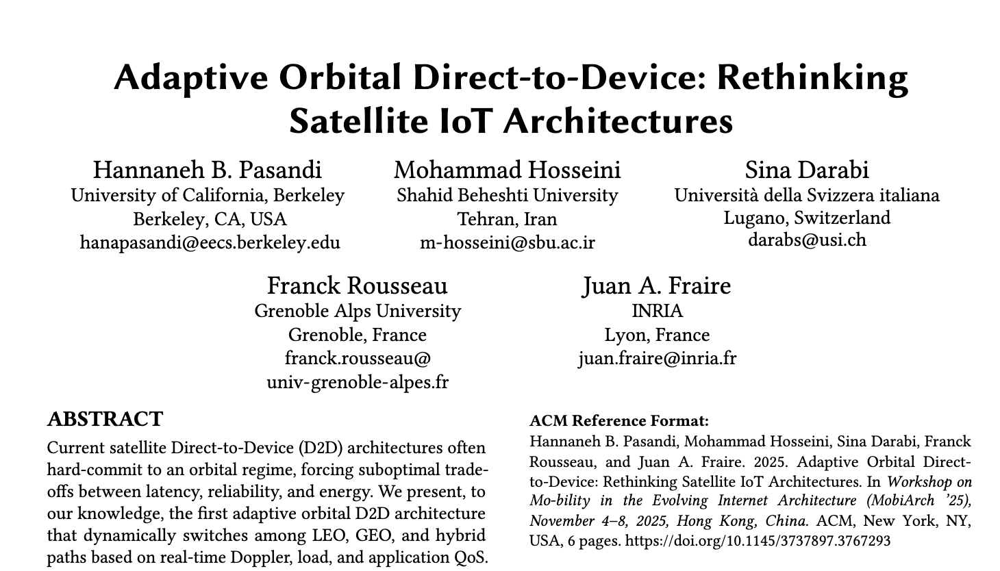
We published collaborative work in the 20th Workshop on Mobility in the Evolving Internet Architecture (MobiArch 2025, MobiCom), entitled “Adaptive Orbital Direct-to-Device: Rethinking Satellite IoT Architectures”.
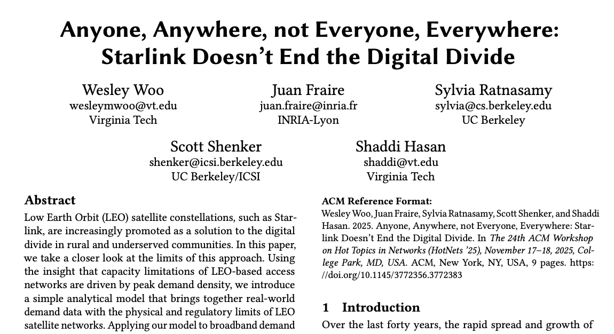
Led by Wesley Woo, we published our first results in the proceedings of HotNets 2025, in “Anyone, Anywhere, not Everyone, Everywhere: Starlink Doesn’t End the Digital Divide”.
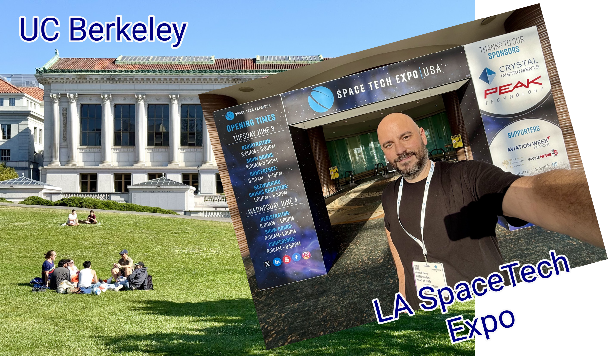
Inria Lyon and UC Berkeley launched the initiative with a joint workshop at UC Berkeley, followed by a visit to the Space Tech Expo in Los Angeles to engage with industry partners.
D3-CONNECT fosters open collaboration, expands global connectivity and reduces barriers to entry in space networking.
Seamless IoT connectivity across remote areas without terrestrial infrastructure, supporting agriculture, environmental monitoring and logistics.
Reliable communication during disasters when terrestrial networks are compromised, saving lives through better coordination.
Bridging communication gaps for ships at sea, improving safety, navigation and operational efficiency for maritime industries.
We welcome collaboration on modeling, simulation and open architectures for direct-to-device satellite networks.
Dr. Juan Fraire
Inria Lyon – Agora Team